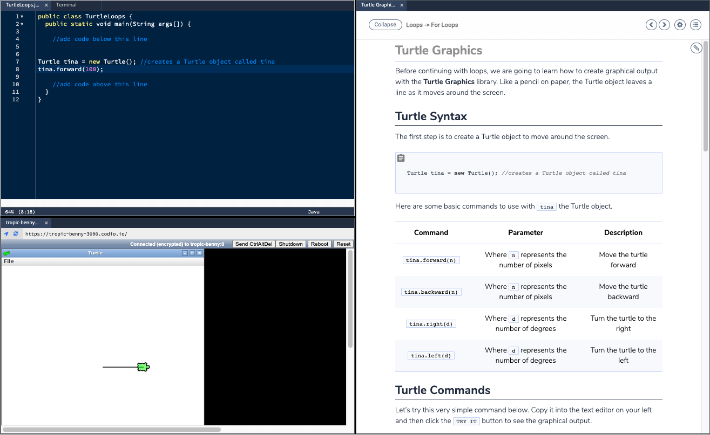

Turtle¶
With Turtle Graphics, students can produce animations and graphical output. Lines are drawn following the turtle movement.

In Python¶
Starter Pack¶
We have a Turtle Graphics in Python Starter Pack to help you get started.
You can find this by either searching for “turtle” in the starter pack area or:
For Codio.com users, click here
For Codio.co.uk users, click here
Manual Set up¶
Turtle is pre-installed in the Python library, so manual installation is simple:
Start by creating either a new project or assignment in your course and selecting the Python Trajectory Stack.
Select Tools at the top and click Install software. Search for X server and select install.
Once the software has downloaded, go to Project > Restart Box in the menu.
Create two files:
.py: This is the student code file.bg.sh: This is the bash script.
Within the
bg.shfile, write the following bash script:
#!/bin/bash
set -e
set -o pipefail
. /etc/profile.d/codio-xserver.sh
$1 -m py_compile $2
nohup $@ > /dev/null 2>&1&
Set up your page panels by selecting the settings wrench from inside your Guide Editor. Select 3-panels without tree, and then navigate to Open Tabs.
Under Open Tabs, drag in your
.pyfile and position it in panel 0.Press the Add Tab button and specify the type as Preview. Paste the following in the URL field:
https://{{domain3050}}/Position this in panel 1.Select Save and close settings.
The last thing you need to do is set up a Try It button so that once code is written in the code file, it can be executed in the server. In the Guide Editor, write the following:
{Try it}(bash .guides/bg.sh python3 file.py)Note
You need to import the turtle library with
import turtleas the first line of your code and end your code by callingturtle.mainloop().Turtle automatically chooses the window position. To configure your own behavior create turtle.cfg file in the working directory with content defines window position.
Example:
leftright=0
topbottom=0
width=1.0
height=1.0
In Java¶
We have a Turtle Graphics in Java Starter Pack to help you get started.
You can find this by either searching for “turtle” in the starter pack area or:
For Codio.com users, click here
For Codio.co.uk users, click here
In C++¶
We have a Turtle Graphics in C++ Starter Pack to help you get started.
You can find this by either searching for “turtle” in the starter pack area or:
For Codio.com users, click here
For Codio.co.uk users, click here